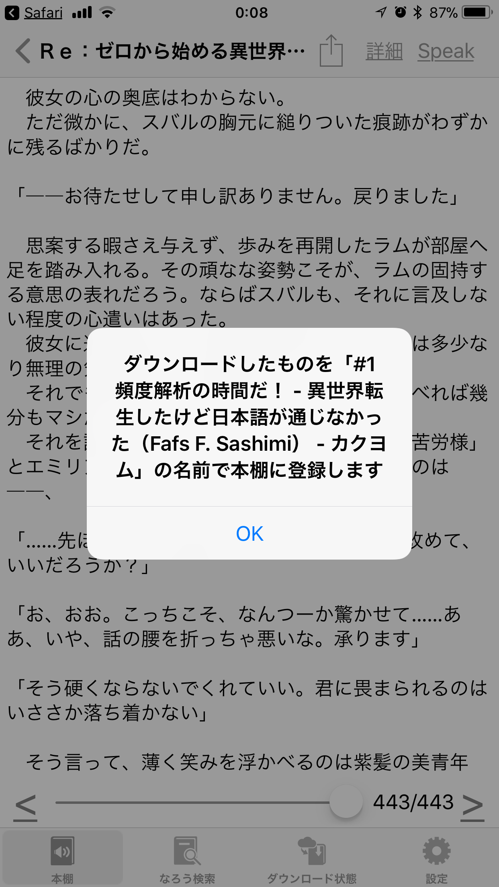
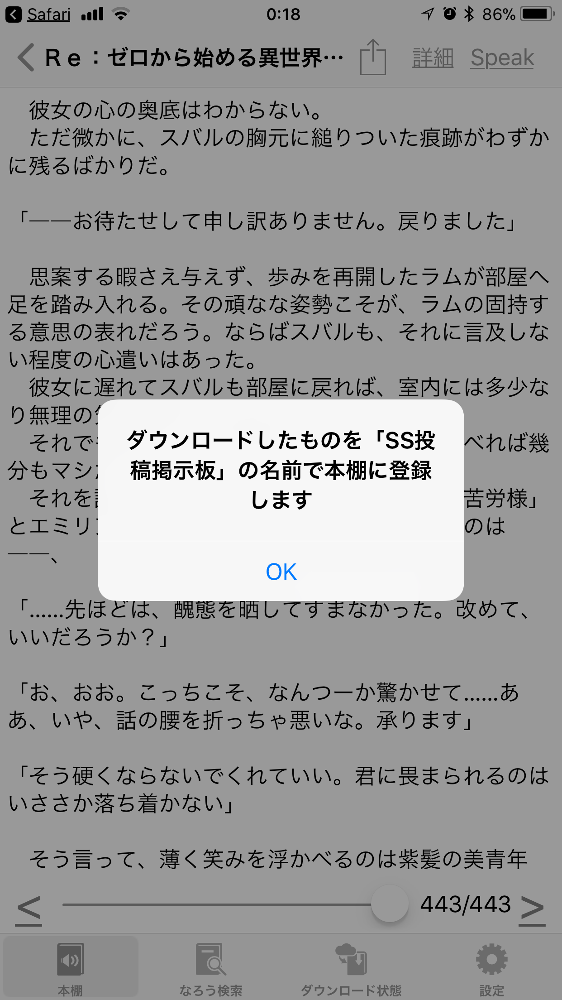

「ことせかい へ読み込む」機能について
ことせかい は 小説家になろう様 専用のアプリとして開発されていますが、小説家になろう様 以外のコンテンツも読み上げたいという声をよく聞きます。そのため、自作小説の追加機能を追加するなどである程度の対応はしてきました。
ただ、自作小説の追加機能では、他のサイトで連載されている小説等を読み込む事などは非常に面倒くさい事になっています。
そこで、手軽に他のサイトの小説を ことせかい に取り込むための機能を模索しています。
「ことせかい へ読み込む」機能はそのための実装の一つです。
「ことせかい へ読み込む」機能は Safari のシェアボタンを利用します。(それ以外のアプリからのシェアボタンでは恐らくは正常に機能しません)
ですので、まずは Safari を起動してください。
Safari にはシェアボタン(四角い箱から上向きの矢印が出ているボタン)があります。表示されていない場合はページを一番上までスクロールさせてみると出てくると思います。
シェアボタンを押すと、カラーのアイコンの行と白黒のアイコンの行が出て来ると思います。「ことせかい へ読み込む」機能は白黒のアイコンの行に属しています。もし、「ことせかい へ読み込む」のボタンが無い場合は、白黒のアイコンの行を横にスクロールしていって「その他」を選んだ先に出てくる「ことせかい へ読み込む」機能をONにしてください(ついでに「ことせかい へ読み込む」の位置を上にズラしておくと少し便利になるかもしれません)。「ことせかい へ読み込む」ボタンが表示されるとこのようになります。
このボタンを押すと、「このページを"ことせかい"で開きますか？」といったダイアログが出ます。
このダイアログで「開く」を選択すると、ことせかい アプリへと移動します。
「ことせかい へ読み込む」機能がうまく動いた場合、ことせかい アプリへと移動した後、少し待つと『ダウンロードしたものを「〜」の名前で本棚に登録します』というダイアログが出ます。それが出ない場合は失敗しています。

「ことせかい へ読み込む」機能が起動した時、ことせかい は「ことせかい へ読み込む」機能でシェアされてきたWebページを解析して、
- そのページのタイトルを取得して小説名として設定する(初期の小説名はシェアされたURLになっています)
- そのページのコンテンツと思われる所を推測して本文として読み込む(コンテンツの場所がわからない場合はそのページの全てを文字列化して本文として読み込む)
- そのページに続く別のページが推測されるならば、その別のページを読み込む
という事をやっています。
ここで、最初のページを読み込んで、タイトルが確定した時に上記のダイアログを表示するようになっています。
ですので、最初のページを読み込むまでの2,3秒の間、特に何も起こっていないように見えるかと思いますが、少しまってやってください。
Webページ自体はだいたい1秒に1ページずつ読み込むようにしています。なので、後半のページは少しづつ読み込まれていくはずです。
さて、ここでユーザの皆様が混乱する点です。
先程、ことせかい は「ことせかい へ読み込む」機能で指定されたWebページについて、「そのページのタイトルを取得して小説名として設定する」という事をしていると書きました。WebページのタイトルはWebページ毎に様々で、推測がしにくいものとなっています。
その推測がしにくいページのタイトルを小説名として設定しているため、本棚の中からその名前を探し出すのが大変になってしまっています。
この、ページのタイトルを使うことで予測不能な結果になる良い例を挙げます。
「ことせかい へ読み込む」機能でArcadia様の幼女戦記 の1ページ目を読み込もうとすると、「SS投稿掲示板」という名前で本棚に登録されてしまうのです。
正直ゲンナリする感じの大間違いです。これを推測しろと言われても多分誰も推測できないでしょう……

気を取り直して、次のユーザの皆様が混乱する点のお話です。
「ことせかい へ読み込む」機能は、Safari で表示しているページを読み込むだけの機能です。
なので、表示されていないページは基本的には読み込まれません。
これをわざわざ言っているのは、ユーザの皆様としては「小説を取り込みたい」と思っているかもしれないのですが、ことせかい側 は「表示されたページを読み込む」と思っている所の違いがあるのです。
例えば、Safari でカクヨム様のThe video game with no name のタイトルページを開いているとします。
このページで「ことせかい へ読み込む」機能を利用すると、なんと本文が読み込まれず、タイトルも推測できずURLの名前の小説で、「文書の読み込みに失敗しました〜」といった表示になってしまっています。
正解は、1話目のページをSafariで開いて、そのページで「ことせかい へ読み込む」機能を利用する、です。
つまり、「実際に読み上げるための文章が表示されていることを確認してから、「ことせかい へ読み込む」機能を利用する」必要があるわけです。
ユーザ様が混乱するネタはまだまだ続きます。
上記のカクヨム様のサイトをSafariで開こうとすると、カクヨム様のアプリが起動しませんでしたでしょうか。
カクヨム様のアプリをインストールされている場合、カクヨム様の小説をSafariで開こうとすると、カクヨム様のアプリが起動するようになっていると思います。
残念ながらカクヨム様のアプリの起動を止めるにはカクヨム様のアプリを削除するくらいしか方法が無いような感じです(何か副作用の無い方法があれば教えてください)。
よくある失敗例
- ・本棚にURLが登録されて、中身が「文章の読み込みに失敗しました〜」になってしまった
典型的な読み取ることに失敗した例です。何度やっても同じ結果になる場合は恐らくは読み込むことができないWebページです。
ことせかい に読み込む事のできるのはHTMLで書かれたWebページの文字の部分だけです(PDF等は読み込めません)。
どうしても読み込ませたい場合はご意見ご要望フォームから「このURLが読み込めないのでなんとかして欲しいです」と報告していただけると対応し易いかとは思いますが、恐らくは簡単にはいかないような気がします。
- ・本棚に登録されはしたが、中身がおかしい
Safariで表示されているものと、ことせかい が読み込んだものが別のものになっている可能性があります。認証が必要なもの(ログインの手続きがあるなど)は、この失敗をする可能性が高くなります。
- ・同じページで何度も「ことせかい へ読み込む」をしたら同じものが複数本棚に登録された
「ことせかい へ読み込む」機能は今のところは同じURLでも別の小説として本棚に登録してしまいます。
既知の問題点
以下に、現在確認されている問題点を挙げます。
ことせかい では、小説に新しい章が追加された場合にそれを読み込む機能がありますが、
「ことせかい へ読み込む」機能で読み込まれたWebページについても、続きのページが新しく増えていたら読み込もうとするようになっています。
ただ、現状では読み込み中の状態の表示をきちんと更新していないため、表示上はなにやらうまく読み込めていないように見えなくもない、という状態になっています。
また、続きが更新されてそれを読み込んだ場合に、表示されるページ数の最大値を更新していないというバグも確認されており、「100ページから先の新しいページが読み込まれないなぁ」と思ったけれど実は101/100まで読み込んでいた、といった事が起こってしまっています。
他にも、本棚に登録されたURLのバックアップをとる方法は今のところありません。
以上のように、「ことせかい へ読み込む」機能にはユーザ様を混乱させる要素が沢山あります。
これを混乱しないような形に持っていこうとすると、おそらくは小さな修正ではなくて、使い方から変える位の大きな修正が必要になりそうな気がしています。
また、「ことせかい へ読み込む」機能で小説家になろう様以外のWeb小説のサイト様の小説を(ある程度)ことせかい に読み込ませる事ができるようになりますが、ことせかい アプリ内部での「なろう検索」からの小説のダウンロードと比べると使いづらいのは否めません。
このあたりをどうすると良いかも同時に考えたいのですが、悩ましい所です。
とういうのも、恐らくは、アプリ内部の「なろう検索」のような形でアプリ側に検索の仕組みを入れ込んでしまうのがいいような気もするのですが、非公式アプリという関係上、対象のWeb小説サイト様の仕様変更に追従するのが大変です(仕様変更により動かなくなった、といった低評価レビューが溢れるのにはもう飽きました)。
なので、その対象のサイトを増やす事は避けたいです。また、カクヨム様のようにAPIの提供がなく、かつリバースエンジニアリングを禁止している所などもあり、対応がそもそも難しいという問題もあります。
そんなわけで、現在の「ことせかい へ読み込む」機能以上のユーザ体験をどのように作り出すかを考えているのですが、うまい答えが出てきません。何かアイディアなどあれば教えていただけると嬉しいです。